PECES
|
TODO LO QUE NECESITAS PARA TUS PECES - Elige una categoría
Ofertas acuariofilia Alimentación agua fría Alimentación tropicales Acuarios y mesas 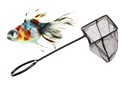 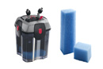 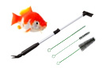 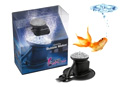 Accesorios acuarios Filtros y bombas Limpieza y tests Aireadores acuarios Termocalentadores Luces y lámparas Decoración acuarios Salud peces y plantas
|
-
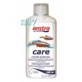 Acondicionador de agua Amtra Care
Desde solo: Antes:5,65€Ahora: 4.95€

Añadir a favoritos Transforma el agua del grifo agresiva al agua sana y natural, eliminando metales pesados, neutralizando el cloro y reduciendo el estrés. También ideal para reducir estrés en momentos de cría. Formatos: 150ml, 300ml. Saber más
12% de Dto en 150ml! Ahorra 0.70€!
-
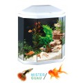 Acuario Aqua Light 30 (Blanco)
Desde solo: 81,95€
Añadir a favoritos Pequeño acuario de cristal de fácil utilización. Con moderno diseño hexagonal. Incorpora una tapa con bisagras y sistema de iluminación de bajo voltaje muy seguro (12W-12V). Equipado con filtro de alto rendimiento Rena para un agua cristalina sin esfuerzo. Marcos plásticos anti-choque con ángulos pulidos. Medidas: 40cm (L) x 20cm (An) x 46.5cm (Al) - 25 litros. Saber más
-
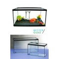 Acuario Beta Fontana (4 medidas)
Desde solo: 15,95€
Añadir a favoritos Acuario básico de cristal para nuestros peces o tortugas. Con marco plástico rígido y tapa de cristal. No incluye decoración. No incluye decoración. 4 medidas: 6 Lts. (26x15x17cm) - 11Lts. (31x19x20cm.) - 14Lts. (36x21x21cm.) - 20 Lts (41x21x26cm) Saber más
-
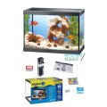 Acuario Ciano Aqua 15 (13l)
Desde solo: 43,30€
Añadir a favoritos Pequeño acuario de cristal con 13 litros de capacidad ideal para peces de agua fría y caliente. Equipado con tapa de plástico protectora anti-choque y sistema de filtración de alto rendimiento para mantener el agua limpia y cristalina. Ángulos pulidos. Caraterísticas en +info. Medidas: 35*17*25cm Saber más
-
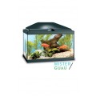 Acuario Ciano Aqua 20 light
Desde solo: 67,65€
Añadir a favoritos Acuario pequeño de vidrio equipado con un sistema de filtracion RENA Superclean 40, para mantener cristalina el agua el mayor tiempo posible y con un esfuerzo mínimo. Medidas: 40 x 20 x 25 cm Saber más
-

Acuario Ciano Aqua Light 60
Desde solo: 118,25€
Añadir a favoritos Un acuario con un equipamiento completo para descubrir la acuariofilia con total confianza, equipado con bomba de agua, termo-calentador, preinstalación de bomba de aire y un filtro biológico. Dimensiones: L60 x An30 x Alt41 cm Saber más
-
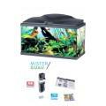 Acuario Ciano Aqua Light 80
Desde solo: 170,60€
Añadir a favoritos Un acuario con un equipamiento completo para descubrir la acuariofilia con total confianza, equipado con bomba de agua, termo-calentador, preinstalación de bomba de aire y un filtro biológico. Dimensiones: L80 x An30 x Alt45 cm Saber más
-
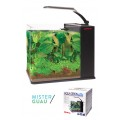 Acuario Nano Aqua Orion 25 (11 litros)
Desde solo: 82,25€
Añadir a favoritos Elegante Nano acuario de cristal de gran transparencia dotado con iluminación de Led y sistema de filtración. Ideal para mantener pequeños camarones, pequeños peces como neones o un bello plantero. Curvo en las esquinas para una bella visión panorámica. Incluye tapa de cristal extraíble para evitar saltos inesperados de los peces. En color negro. Capacidad: 11litros - 25*23*25cm Saber más
-
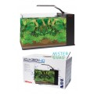 Acuario Nano Aqua Orion 40 Blanco (18 litros)
Desde solo: 93,40€
Añadir a favoritos Elegante Nano acuario de cristal de gran transparencia dotado con iluminación de Led y sistema de filtración. Ideal para mantener pequeños camarones, pequeños peces como neones o un bello plantero. Curvo en las esquinas para una bella visión panorámica. Incluye tapa de cristal extraíble para evitar saltos inesperados de los peces. En color blanco. Click en foto 2 para verlo con mejor detalle. Capacidad: 18litros - 40*23*24cm Saber más
-
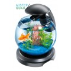 Acuario Tetra Globe con cascada (6.8 l)
Desde solo: 77,85€
Añadir a favoritos Acuario de cristal de 6.8 litros e capacidad y con una bella cascada y sistema de iluminación de alto rendimiento con luz Led blanca. Con forma de pecera clásica de bola. Ideal para peces pequeños o plantas. Está especial mente indicada para niños por su sencillo mantenimiento y para mantener peces de agua fría. Capacidad: 6.8 litros. Diametro: 27.9cm Saber más
-
Aireador Mouse 1
Desde solo: 9,95€
Añadir a favoritos El aireador de acuarios mouse permite activar los sistemas de filtración a la vez que crea agradables burbujas a través de aire liberado que oxigenará nuestro acuario. Para acuarios de un máximo de 78 litros. 1.3 litros/minuto Saber más
-

Aireador Mouse 2
Desde solo: 12,85€
Añadir a favoritos El aireador de acuarios mouse permite activar los sistemas de filtración a la vez que crea agradables burbujas a través de aire liberado que oxigenará nuestro acuario. Para acuarios de un máximo de 120 litros. Capacidad 108 l/h. Consumo 2,3 w. Saber más
-

Aireador Mouse 3
Desde solo: 16,50€
Añadir a favoritos El aireador de acuarios mouse permite activar los sistemas de filtración a la vez que crea agradables burbujas a través de aire liberado que oxigenará nuestro acuario. Para acuarios de un máximo de 200 litros. Capacidad: 150l/h. Consumo: 2.6W Saber más
-

Aireador Mouse 4
Desde solo: 19,95€
Añadir a favoritos El aireador de acuarios mouse permite activar los sistemas de filtración a la vez que crea agradables burbujas a través de aire liberado que oxigenará nuestro acuario. El elegante aireador Wave combina un diseño único y un silencioso funcionamiento. Para acuarios de un máximo de 200 litros. Capacidad: 210/h. Consumo: 2.7W Saber más
-
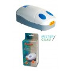 Aireador Mouse 5
Desde solo: 25,30€
Añadir a favoritos El aireador de acuarios mouse permite activar los sistemas de filtración a la vez que crea agradables burbujas a través de aire liberado que oxigenará nuestro acuario. El elegante aireador Wave combina un diseño único y un silencioso funcionamiento. Para acuarios de un máximo de 200 litros. Capacidad: 240/h. Consumo: 4W Saber más
-
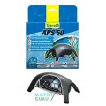 Aireador Tetratec APS 50
Desde solo: 24,80€
Añadir a favoritos Bomba de aire silenciosa y potente para acuarios de entre 10-60l. de capacidad. Rendimiento máximo de la bomba 50l/hora. Potencia 2W. Cómodo y silencioso. Incluye un robinete de aire para regular la corriente de aire. Saber más
-
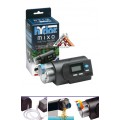 Alimentador automático digital MIXO
Desde solo: 59,65€
Añadir a favoritos Distribuidor automático de alimento para peces, con display digital de fácil programación que suministra hasta 2 comidas diarias. Capacidad: 90cm³ - Autonomía: 30 días aprox. Saber más
-
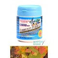 Alimento Community Formula (Copos)
Desde solo: 4,30€
Añadir a favoritos Alimento en forma de escamas básico de gran atractivo para peces de acuarios de agua dulce. Alto contenido en proteínas y rica en vitaminas. Contiene ajo y vitamina C que ayuda a mantener los peces sanos. Mejora la coloración y la vitalidad, mientras que estimula el sistema inmune. Formulado y probado por la biólogos expertos en acuicultura. Formato: 34gr Saber más
-
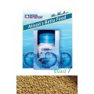 Alimento On Atison's Betta Food
Desde solo: 3,65€
Añadir a favoritos Granulado flotante de alta calidad, desarrollado para producir un alimento completo con mas nutrientes para las diversas especies de Betta. Mejora y acentúa los colores naturales del pez. No enturbia el agua. Las numerosas pruebas han demostrado que esta comida es ideal para el cuidado de los peces Betta desde 6 meses en adelante. Formato: 15gr Saber más
-
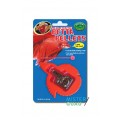 Alimento para Bettas Zoomed
Desde solo: Antes:2,60€Ahora: 2.20€
Añadir a favoritos Micro gránulos flotantes para pez beta. ¡Incluye pinza para alimentar a su Beta!. ¡Entrene a su pez Beta para que coma de la pinza! NATURAL, con vitaminas y minerales añadidos. Con dosificador diario de alimento. Formato: 3.4gr Saber más
15% de Dto! Ahorra 0.40€!
-
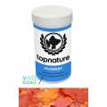 Alimento para peces de agua fría Topnature (escamas)
Desde solo: 1,65€
Añadir a favoritos Pienso completo para peces de agua fría. Alimento natural en escamas enriquecidas con vitaminas, oligoelementos, factores de crecimiento y fertilidad, obteniéndose mejor crecimiento, pigmentación, mayor fertilidad y menor contaminación del medio. Tamaños: 100ml (20gr) - 250ml (45gr) Saber más
-
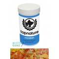 Alimento para peces tropicales Topnature (escamas)
Desde solo: 1,75€
Añadir a favoritos Pienso completo para peces tropicales. Alimento natural en escamas enriquecidas con vitaminas, oligoelementos, factores de crecimiento y fertilidad, obteniéndose mejor crecimiento, pigmentación, mayor fertilidad y menor contaminación del medio. Tamaños: 100ml (20gr) - 250ml (45gr) Saber más
-
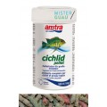 Amtra alimento Cichlid Pellet
Desde solo: 11,40€
Añadir a favoritos Amtra pellet cíclidos es un alimento de alta calidad que, debido a su alto contenido en elementos nutritivos importantes está especialmente indicado para los cíclidos de gran tamaño como dieta básica diaria. Contiene valiosas materias primas y se ha enriquecido con L-Carnitina para un aumento saludable, astaxantina para una coloración brillante y Beta-glucano para mejorar la inmunización. Formato: 1000ml Saber más
-
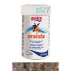 Amtra alimento Oranda (Copos)
Desde solo: 2,70€
Añadir a favoritos Amtra oranda es un alimento de alta calidad para todos los peces de colores, especialmente indicados para una dieta básica diaria. Contiene valiosas materias primas y se ha enriquecido con L-Carnitina, un aumento saludable y astaxantina, por una coloración brillante. Formato: 100ml, 250ml. Saber más
-
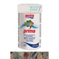 Amtra alimento Prima (Copos)
Desde solo: 3,35€
Añadir a favoritos Amtra prima es un alimento completo para granular tropical peces pequeños de tamaño medio, especialmente indicado como dieta básica diaria. Contiene valiosas materias primas y se ha enriquecido con L-carnitina para un crecimiento equilibrado; astaxantina para una coloración brillante y beta glucano para mejorar la inmunización. Formato: 100ml, 250ml. Saber más
-
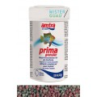 Amtra alimento Prima (Granulado)
Desde solo: 4,05€
Añadir a favoritos Amtra prima granular es un alimento completo para granular tropical peces pequeños de tamaño medio, especialmente indicado como dieta básica diaria. Contiene valiosas materias primas y se ha enriquecido con L-carnitina para un crecimiento equilibrado; astaxantina para una coloración brillante y beta glucano para mejorar la inmunización. Formato: 100ml, 250ml. Saber más
-
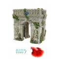 Arco de triunfo (15cm)
Desde solo: 19,95€
Añadir a favoritos Preciosa recreación del arco de un arco del tiunfo al que le hqa crecido vegetación por estar sumergido. Con mucho detalle y realizado en poliresina no tóxica especialmente diseñada para acuarios. Haz que tus peces disfruten y se entretengan pasando por en medio por sus persecuciones. Medidas: 15*15cm Saber más
-
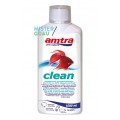 Bacterias Amtra Clean
Desde solo: 7,70€
Añadir a favoritos Bacterias para eliminar la toxicidad del agua para acuarios de agua salada y dulce. Con las bacterias clean ahorras un 50% de cambios de agua por descomposición natural de la contaminación del agua. Contiene micro organismos naturales que crean agua de acuario clara, saludable y biológicamente activa. Formatos: 150ml, 300ml. Saber más
-
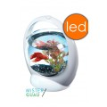 Bettera Tetra Betta Ring con luz Led
Desde solo: 34,85€
Añadir a favoritos Acuario plástico especialmente diseñado para peces Betta. Con diseño moderno gracias a su forma de anillo que decorará cualquier rincón del hogar u oficina. Potente iluminación superior LED, duradera y fiable. Funciona con pilas para una mayor seguridad. Compuesto por una base color plata y una bola de cristal que puede contener 1,8 litros de agua. Saber más
-

Bomba centrífuga Hydor Pico Evolution 250
Desde solo: 15,85€
Añadir a favoritos Esta bomba centrífugas garantiza unas prestaciones elevadas, dimensiones reducidas y la total seguridad de la tecnología Hydor. Dotada de regulador de capacidad e ideale para su aplicación en acuarios de agua dulce y marina y artículos de decoración de interiores. Características: regulador de caudal, trabaja con pocos cm de agua. Caudal máximo: 270l/h, altura máx: 50cm, consumo: 4.5w. Para acuario de hasta 100l. Saber más
-
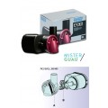 Bomba centrífuga Hydor Pico Evolution 400
Desde solo: 19,75€
Añadir a favoritos Esta bomba centrífugas garantiza unas prestaciones elevadas, dimensiones reducidas y la total seguridad de la tecnología Hydor. Dotada de regulador de capacidad e ideale para su aplicación en acuarios de agua dulce y marina y artículos de decoración de interiores. Características: regulador de caudal, trabaja con pocos cm de agua. Caudal máximo: 385l/h, altura máx: 70cm, consumo: 4w. Para acuario de hasta 200l. Saber más
-
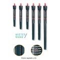 Calentador Trópico (4 potencias)
Desde solo: Antes:20,55€Ahora: 20.45€
Añadir a favoritos Calentador interno automático para acuarios completamente sumergible. Con pernio de regulación y muy sensible. Con ganchos de apoyo y ventosa de anclaje. 4 potencias (ver +info) Saber más
10% de Dto en 50W! Ahorra 2.05€!
10% de Dto en 25W! Ahorra 2.05€!
10% de Dto en 100W! Ahorra 2.05€!
10% de Dto en 200W! Ahorra 2.30€!
-
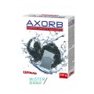 Carbón filtrante hiper-activo Axorb (2 medidas)
Desde solo: 4,65€
Añadir a favoritos Material realizado a base de carbón hiper-activo que absorbe determinadas substancias del agua del acuario como son los medicamentos, substancias en suspensión, etc... Es la parte del filtro que debemos cambiar y sustiuir para asegurarnos un agua limpia y sin restos. Se aconseja renovarlo mensualmente para optimizar su capacidad de filtrado. 2 medidas: 175gr - 525gr Saber más
-
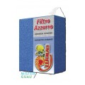 Carbón filtrante para acuarios Foamex
Desde solo: 4,65€
Añadir a favoritos Material realizado a base de carbón hiper-activo que absorbe determinadas substancias del agua del acuario como son los medicamentos, substancias en suspensión, etc... Es la parte del filtro que debemos cambiar y sustiuir para asegurarnos un agua limpia y sin restos. Se aconseja renovarlo mensualmente para optimizar su capacidad de filtrado. Medidas: 18*12cm Saber más
-
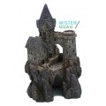 Castillo de mago (14cm)
Desde solo: 10,65€
Añadir a favoritos Auténtico castillo de mago Medieval que aportará elegancia y distinción a nuestro acuario. Realizado en poliresina no tóxica ofrece distracción y diversión a nuestros peces. Muy detallado con su torreón, foso y entrada a cuevas subterraneas. Un pequeño trozo de historia en nuestro acuario!. Medidas: 14cm Saber más
-
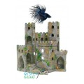 Castillo medieval inglés (10cm)
Desde solo: 8,00€
Añadir a favoritos Auténtico castillo Medieval de estilo inglés que aportará elegancia y distinción a nuestro acuario. Realizado en poliresina no tóxica ofrece distracción y diversión a nuestros peces. Muy detallado y cubierto de flores para aportarle más colorido. Un pequeño trozo de historia en nuestro acuario!. Medidas: 10cm Saber más
-
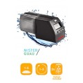 Comedero automático para peces Delux 24 LCD
Desde solo: 51,65€
Añadir a favoritos Alimentador automático para despreocuparnos de la alimentación de nuestros peces en vacaciones, fines de semana, etc. Programable de 1 a 5 comidas con hasta 3 dosis en intervalos de 1minuto. Pinza incluida para poder adaptarlo a cualquier acuario. Adhesivo doble cara incluido. 2 pilas AA incluidas. Saber más
-
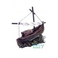 Figura acuario Barco de pesca
Desde solo: 11,35€
Añadir a favoritos Figura para acuario realizada en resina atóxica y tela. Recrea una barca de pesca que ha escorado en la orilla. Ofrece a nuestros peces pequeños espacios para el juego y el entretenimiento a la vez que nos permite tener un acuario decorado y temático. Medidas: 13x7x12cm. Saber más
-
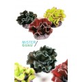 Figura acuario Coral abanico
Desde solo: 6,80€
Añadir a favoritos Bonita recreación de un coral realizado en resina no tóxica y en colores neutros con puntitas brillantes para acuarios elegantes. Figura especialmente diseñada para acuarios. Su forma favorece escondite y diversión para los más peques! Con base rígida para poder esconderla y enterrarla. Colores surtidos. Medidas: 1x9,5x8,5cm Saber más
-
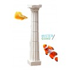 Figura acuarios Columna dórica clásica
Desde solo: 6,65€
Añadir a favoritos Figura clásica de decoración para nuestro acuario, que representa una columna griega de estilo dórico. A nuestros peces les encantará sortearla, manteniéndose entretenidos y mejorando su salud. Medidas: 4*4*18cm Saber más
-
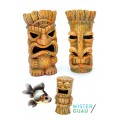 Figura Hawaiana Tiki (10cm)
Desde solo: 6,95€
Añadir a favoritos Auténtica figura hawaiana representando una figura Tiki que representa a los dioses, guardianes y espíritus de la cultura hawaiana. Realizado en poliresina no tóxica ofrece distracción y diversión a nuestros peces. Muy detallado. Disponible en 3 modelos surtidos. Medidas: 10cm Saber más
-
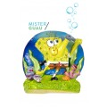 Figura para acuario Bob Esponja difusor (7.6cm)
Desde solo: 9,55€
Añadir a favoritos Quien vive en una piña debajo del mar? Bob Es-pon-ja!! Divertida figura difusor fabricada en resina no tóxica de Bob Esponja echando burbujas. Quedará ideal en nuestro acuario! Con conector para el tubo difusor en su parte trasera parecerá realmente que nuestro amigo Bob crea burbujas para nuestro acuario! Medidas: 7.6cm Saber más
-
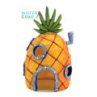 Figura para acuario Bob Esponja Piña (16.5cm)
Desde solo: 15,10€
Añadir a favoritos Quien vive en una piña debajo del mar? Bob Es-pon-ja!! Divertida figura fabricada en resina no tóxica de la casa piña de Bob Esponja. Su mediano tamaño permite entrada a nuestros peces pequeños, escontrando en ella un punto de color, escondites y diversión. Excelente acabado y vistosidad para decorar nuestro acuario. Reconstruye la villa "Fondo de Bikini" en tu acuario. Medidas: 16.5cm Saber más
-
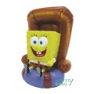 Figura para acuario Bob Esponja sillón (12.5cm)
Desde solo: 17,20€
Añadir a favoritos Quien vive en una piña debajo del mar? Bob Es-pon-ja!! Divertida figura fabricada en resina no tóxica de Bob Esponja sentado en su cómodo sillón. Parecerá que observa nuestro acuario y peces como si de la tele se tratase!. Ideal para decorar nuestro acuario y aportar un punto de color. Medidas: 12.5cm Saber más
-
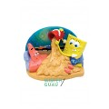 Figura para acuario Bob Esponja y Patricio playa (16.5cm)
Desde solo: 15,10€
Añadir a favoritos Quien vive en una piña debajo del mar? Bob Es-pon-ja!! Divertida figura fabricada en resina no tóxica de Bob Esponja echando un cubo de arena sobre Patricio mientras juegan en el fondo Bikini. Ideal para decorar nuestro acuario y aportar un punto de color. Figura con base trasera plana. Medidas: 16.5cm*5cm Saber más
-
Figura para acuario Calamardo (14cm)
Desde solo: 17,20€
Añadir a favoritos Divertida figura fabricada en resina no tóxica de un gran Calamardo que, como siempre, mira con desaprovación lo que pueda estar haciendo nuestro amigo Bob. Convierte tu acuario en la villa de Fondo Bikini! Ideal para decorar nuestro acuario y aportar un punto de color. Medidas: 14cm Saber más
-
Figura para acuario Dora Exploradora en la playa (6cm)
Desde solo: 8,75€
Añadir a favoritos Bonita figura en resina no tóxica de la exploradora más famosa para los niños, Dora la Exploradora. Decora tu acuario con esta figura que aportará vistosidad y divertidos colores al hábitat de tus peces. Figura original. Acabados de alta calidad y detalle. Tamaño: 6cm Saber más
-
Figura para acuario Dora Exploradora Sirenita (7cm)
Desde solo: 12,55€
Añadir a favoritos Bonita figura en resina no tóxica de la exploradora más famosa para los niños, Dora la Exploradora. Decora tu acuario con esta figura que aportará vistosidad y divertidos colores al hábitat de tus peces. Figura original. Acabados de alta calidad y detalle. Tamaño: 7cm Saber más
-
Figura para acuario mini Arenita (5cm)
Desde solo: 6,30€
Añadir a favoritos Quien vive en una piña debajo del mar? Bob Es-pon-ja!! Deliciosa figura de la ardilla marina más famosa de todos los tiempos, ideal para decorar tu acuario y reconstruir la villa "Fondo de Bikini" en tu acuario. Realizado en resina no tóxica. Medidas: 5cm Saber más
-
Figura para acuario mini Bob Esponja (5cm)
Desde solo: 7,50€
Añadir a favoritos Quien vive en una piña debajo del mar? Bob Es-pon-ja!! Deliciosa figura de la esponja de mar más famosa de todos los tiempos, ideal para decorar tu acuario y reconstruir la villa "Fondo de Bikini" en tu acuario. Realizado en resina no tóxica. Medidas: 5cm Saber más
-
Figura para acuario mini Calamardo (5cm)
Desde solo: 6,30€
Añadir a favoritos Quien vive en una piña debajo del mar? Bob Es-pon-ja!! Deliciosa figura del calamar más famoso de todos los tiempos, ideal para decorar tu acuario y reconstruir la villa "Fondo de Bikini" en tu acuario. Realizado en resina no tóxica. Medidas: 5cm Saber más
-
Figura para acuario mini Crush (5cm)
Desde solo: 12,85€
Añadir a favoritos Pequeña y decorativa figura de la tortuga Crush posada sobre anémonas, la tortuga más famosa de la película de animación Buscando a Nemo. Sus vistosos colores decorarán nuestro acuario y distraerán a nuestros peces. Realizado en resina no tóxica. Se presenta en blister oficial de cartón. Medidas: 5cm Saber más
-
Figura para acuario mini Gary (5cm)
Desde solo: 6,30€
Añadir a favoritos Quien vive en una piña debajo del mar? Bob Es-pon-ja!! Deliciosa figura de uno de los caracoles más famosos de todos los tiempos, ideal para decorar tu acuario y reconstruir la villa "Fondo de Bikini" en tu acuario. Realizado en resina no tóxica. Medidas: 5cm Saber más
-
Figura para acuario mini Nemo (4cm)
Desde solo: 11,35€
Añadir a favoritos Pequeña y decorativa figura de Nemo posado sobre anémonas, el pez payaso protagonista de la película de animación Buscando a Nemo. Sus vistosos colores decorarán nuestro acuario y distraerán a nuestros peces. Realizado en resina no tóxica. Se presenta en blister oficial de cartón. Medidas: 4.5cm Saber más
-
Figura para acuario mini Patricio (5cm)
Desde solo: 6,30€
Añadir a favoritos Quien vive en una piña debajo del mar? Bob Es-pon-ja!! Deliciosa figura de la estrella de mar más famosos de todos los tiempos, ideal para decorar tu acuario y reconstruir la villa "Fondo de Bikini" en tu acuario. Realizado en resina no tóxica. Medidas: 5cm Saber más
-
Figura para acuario mini Plankton (5cm)
Desde solo: 6,30€
Añadir a favoritos Quien vive en una piña debajo del mar? Bob Es-pon-ja!! Deliciosa figura del villanomarino más famoso de todos los tiempos, ideal para decorar tu acuario y reconstruir la villa "Fondo de Bikini" en tu acuario. Realizado en resina no tóxica. Medidas: 5cm Saber más
-
Figura para acuario mini Señor Cangrejo (5cm)
Desde solo: 6,30€
Añadir a favoritos Quien vive en una piña debajo del mar? Bob Es-pon-ja!! Deliciosa figura de uno de los cangrejos más famosos de todos los tiempos, ideal para decorar tu acuario y reconstruir la villa "Fondo de Bikini" en tu acuario. Realizado en resina no tóxica. Medidas: 5cm Saber más
-
Figura para acuario Ostra gigante difusor
Desde solo: 15,15€
Añadir a favoritos Ostra realizada en resina genialmente conseguida que le dará a nuestro acuario un aspecto muy natural y marino. De colores rojizos y ocres con una perla en su interior. Con conector para el tubo difusor en su parte trasera parecerá realmente que crea burbujas para nuestro acuario! Medidas: 12x6,5x7,5cm. Saber más
-
Filtro interior Crystal Duo 2 (R 05 II)
Desde solo: 40,40€
Añadir a favoritos Filtro interior para acuarios con doble acción filtrante, mecánica y química, de fácil posicionamiento gracias a la abrazadera de soporte angular. Gran versatilidad gracias al especial contenedor rellenable con materiales filtrantes (carbón activo) para una filtración adicional y personalizada. Deflector de flujo multidireccional y regulador de caudal para una eficiente recirculación del agua y llave de aireación regulable para una oxigenación suplementaria. Silenciador incorporado a la bomba. W: 10W - Flujo: 650 l/h - Para acuarios: 80-150l. Saber más
-
")
Filtro interior Crystal Duo Mini (K10 II)
Desde solo: 30,15€
Añadir a favoritos Filtro interior para acuarios con doble acción filtrante, mecánica y química, de fácil posicionamiento gracias a la abrazadera de soporte angular. Gran versatilidad gracias al especial contenedor rellenable con materiales filtrantes (carbón activo) para una filtración adicional y personalizada. Deflector de flujo multidireccional y regulador de caudal para una eficiente recirculación del agua y llave de aireación regulable para una oxigenación suplementaria. Silenciador incorporado a la bomba. W: 4W - Flujo máx: 170 l/h - Para acuarios: 20-50 l. Saber más
-
Filtro interior Filpo 300
Desde solo: 19,95€
Añadir a favoritos Filtro interior para acuarios de agua dulce de hasta 60 litros. Provisto de cartuchos de esponja y carbón activo, intercambiables, que permiten obtener una excelente calidad de agua. De agradable diseño y eficiente filtración, incorpora un mecanismo para mezclar aire con el agua ya filtrada mejorando así la oxigenación del agua. Caudal máximo: 300 l/h - Potencia: 4w Saber más
-
Filtro interior Filpo 450
Desde solo: 30,00€
Añadir a favoritos Filtro interior para acuarios de agua dulce de hasta 100 litros. Provisto de cartuchos de esponja y carbón activo, intercambiables, que permiten obtener una excelente calidad de agua. De agradable diseño y eficiente filtración, incorpora un mecanismo para mezclar aire con el agua ya filtrada mejorando así la oxigenación del agua. Caudal máximo: 450 l/h - Potencia: 4.8w Saber más
-
Filtro interior Filpo mini
Desde solo: 16,10€
Añadir a favoritos Filtro interior Wave para acuarios de agua dulce o salada, con cartuchos de esponja y de carbón intercambiables que permiten obtener una excelente calidad de agua. De agradable diseño y eficiente filtración, incorpora un mecanismo venturi para mezclar aire con el agua ya filtrada mejorando así la oxigenación del agua del acuario. Caudal máximo: 200 l/h - Potencia: 2w - Acuarios de hasta 20 litros. Saber más
-
Flamingo Arena para acuario Neón amarilla
Desde solo: Antes:4,00€Ahora: 3.50€
Añadir a favoritos Grava decorativa para acuarios realizada con sílice de color amarillo neón . Grava de medida 4/7mm. redondeada y de color neón intenso para aportar más vida a nuestro acuario. No tóxica, libre de polvo. Formato: 1Kg Saber más
Hemos bajado el precio!
-
Flamingo Arena para acuario Neón mezcla
Desde solo: Antes:4,00€Ahora: 3.50€
Añadir a favoritos Grava decorativa para acuarios realizada con sílice de color mezclado de varias tonalidades neón . Grava de medida 4/7mm. redondeada y de color neon intenso para aportar más vida a nuestro acuario. No tóxica, libre de polvo. Formatos: 1Kg Saber más
Hemos bajado el precio!
-
Flamingo Arena para acuario Neón naranja
Desde solo: Antes:4,00€Ahora: 3.50€
Añadir a favoritos Grava decorativa para acuarios realizada con sílice de color naranja neón . Grava de medida 4/7mm. redondeada y de color neon intenso para aportar más vida a nuestro acuario. No tóxica, libre de polvo. Formato: 1Kg Saber más
Hemos bajado el precio!
-
Flamingo Arena para acuario Neón rosa
Desde solo: Antes:4,00€Ahora: 3.50€
Añadir a favoritos Grava decorativa para acuarios realizada con sílice de color rosa neón . Grava de medida 4/7mm. redondeada y de color neon intenso para aportar más vida a nuestro acuario. No tóxica, libre de polvo. Formato: 1Kg Saber más
Hemos bajado el precio!
-
Flor plástica Caulerpa Margarita (8cm)
Desde solo: 4,90€
Añadir a favoritos Bonita composición de margaritas de vivos colores para el fondo de nuestro acuario. Realizado en plástico y resina no tóxico especialmente diseñado para acuarios. Se presenta en cajita plástica conservadora. Colores surtidos. Medidas: 8,8x7,3x4cm Saber más
-
Fluorescente para acuarios Wave Plant Power
Desde solo: 10,55€
Añadir a favoritos El tubo fluorescente Plant Power resalta especialmente los colores rojos y azules. Su espectro lumínico favorece la fotosíntesis de las plantas ornamentales estimulando y optimizando su crecimiento. Medidas: 15W T8 450mm*Ø26mm Saber más
-
Fluorescente para acuarios Wave Tropical River
Desde solo: 9,20€
Añadir a favoritos Tubo fluorescente trifósforo de luz diurna específica para agua dulce. Ofrece una visión óptima del ambiente acuático resaltando los colores de los peces y el verde de las plantas. Temperatura de color 7000ºK. Para una iluminación completa y similar a la de la naturaleza se puede combinar con el fluorescente Plant Power. 4 Medidas/potencias: T1 (14w T8-375mm) - T2 (15w T8-450mm) - T3 (18w T8-600mm) - T4 (25w T8-750mm) Saber más
-